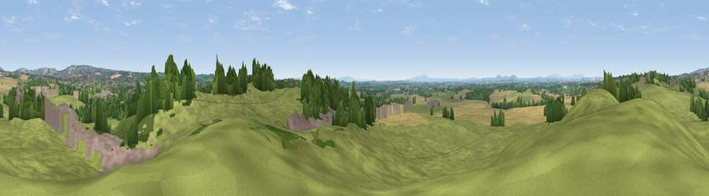

Viewpoint near Bromsgrove
#16263 in England · top 21% of its area beats it · near Bromsgrove · access?Where it is
The exact computed spot (SO 94225 70275). Click the marker for map links.
Public access: no public right of way or access land is recorded at this exact spot — it may be on private land. Computed from Natural England's CRoW access layer and OpenStreetMap rights of way — not the legal definitive map. Always verify locally.
The view, rendered

A 360° render of this exact spot computed from the terrain model, tree cover and land cover — summer colours, afternoon light, calibrated against photographs of famous viewpoints. Real trees, hedges and buildings will differ in detail.
The panorama
Grey silhouette: terrain skyline in each direction (720 bearings, Earth curvature and refraction included). Dashed green: skyline with trees (+15 m) and buildings (+8 m) as obstacles. Blue strip: how far the ground is visible on each bearing.
Where the view opens
Wedge length = distance to the farthest visible ground on that bearing (vegetation-aware). Rings at 10, 25 and 50 km.
What fills the view
63% grassland · 17% woodland · 13% cropland · 8% built-up
Angular shares of the visible panorama (visual magnitude), not map area. Landscape diversity 0.46 (0–1 Shannon).
Key numbers
More beautiful places nearby
The staircase of upgrades: each row has a higher view potential than everything closer. Driving times are estimates from straight-line distance, calibrated against real road routing — check an actual route before setting out.
| Place | Direction | Drive | Score |
|---|---|---|---|
| Viewpoint near Dodford | NW · 1 km | ~4 min | 57.7 |
| Caspidge Hill | ENE · 4 km | ~9 min | 58.4 |
| Holywell Hill | NNE · 7 km | ~15 min | 69.4 |
| Windmill Hill | NNE · 8 km | ~16 min | 73.2 |
| Viewpoint near Clent | N · 10 km | ~19 min | 74.3 |
| Viewpoint near Abberley | W · 18 km | ~31 min | 77.5 |
| Viewpoint near Abberley | W · 19 km | ~32 min | 78.1 |
| Abberley Hill | W · 19 km | ~33 min | 80.4 |
52.33053, -2.08617 · source: screening · position refined by local search. Computed location — check access rights before visiting.